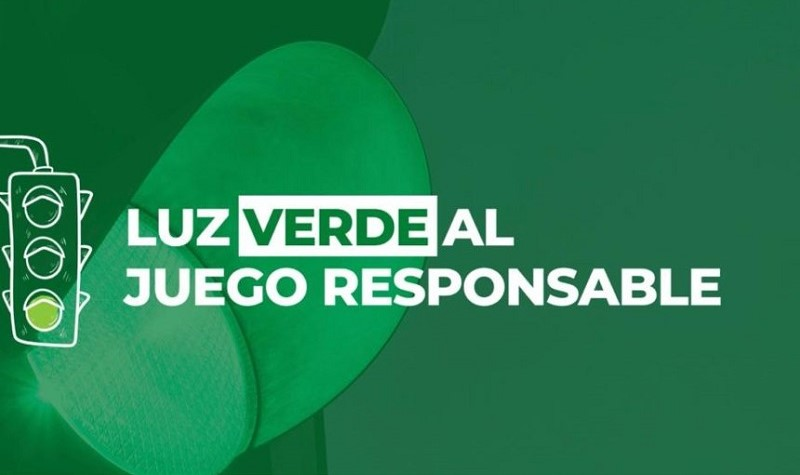

Funciones del IAS
Como ente de control, el IAS asegura que toda actividad lúdica en la provincia se realice bajo marcos legales estrictos, garantizando transparencia.
Principales Responsabilidades
-
Regulación y control:
Supervisión de todos los juegos de azar autorizados en Formosa.
-
Fiscalización:
Control directo en salas de juego y casinos para evitar irregularidades.
-
Licencias:
Gestión y otorgamiento de permisos para agencias oficiales.
-
Programas Sociales:
Administración de fondos destinados a salud, educación y deporte.
-
Juego Responsable:
Implementación de campañas de concientización para la comunidad.
Impacto Social
El IAS no solo regula, sino que también se compromete a generar un impacto positivo en la sociedad, destinando recursos a programas comunitarios y promoviendo el juego responsable.
Compromiso con la Responsabilidad Social
- Prevención de ludopatía mediante asistencia profesional.
- Promoción de hábitos de juego saludable.
- Protección estricta de menores de edad.
- Apoyo financiero a programas comunitarios locales.
- Transparencia total en la rendición de cuentas.
